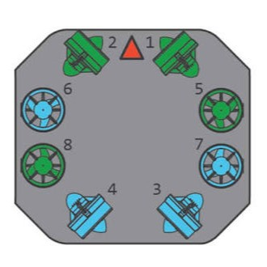
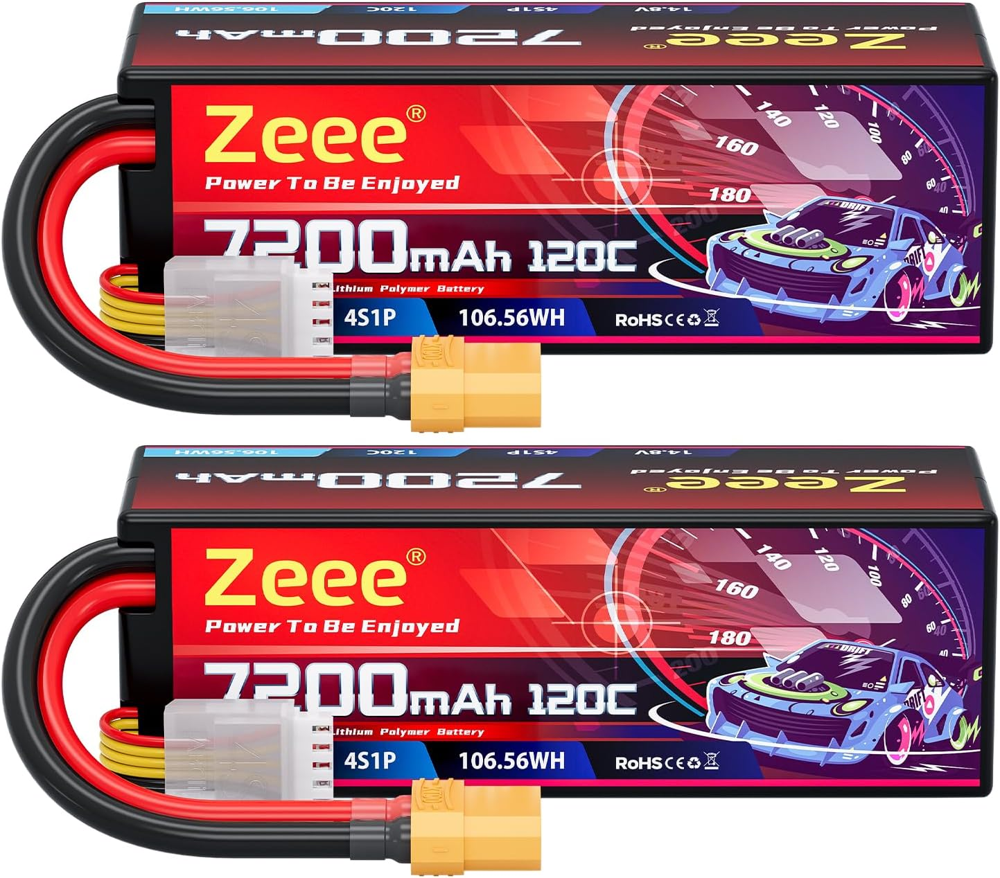
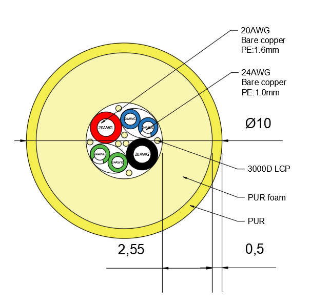
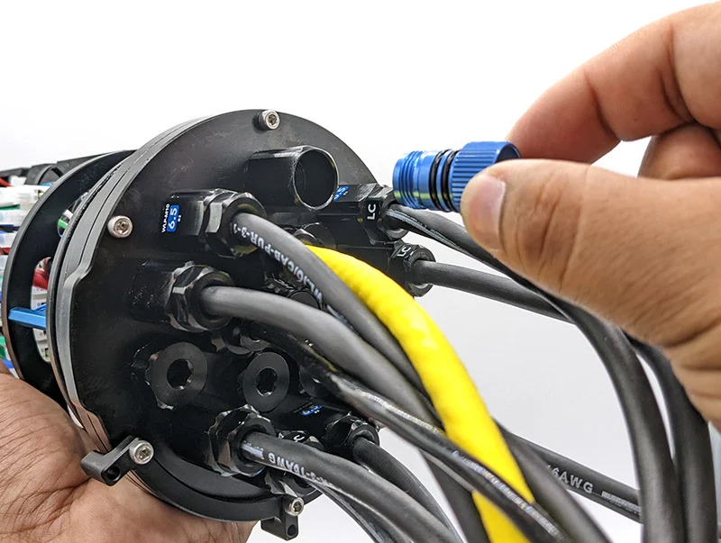
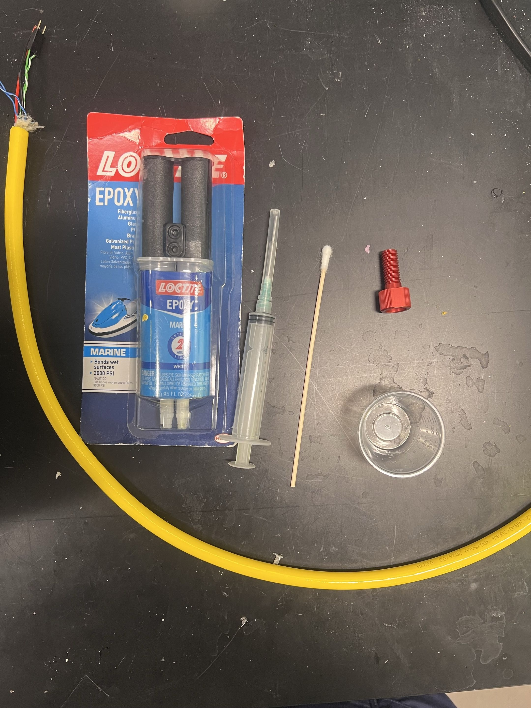
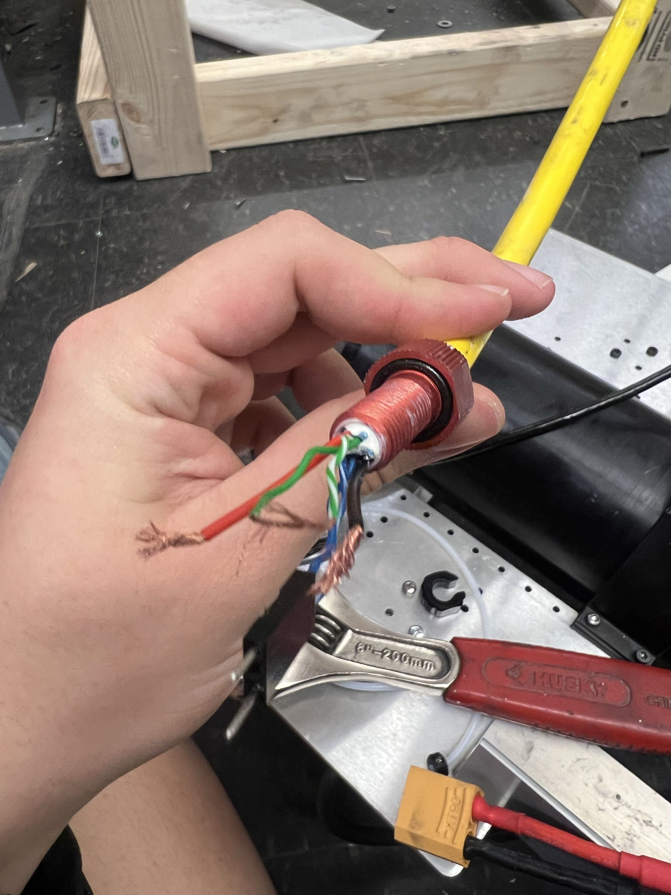
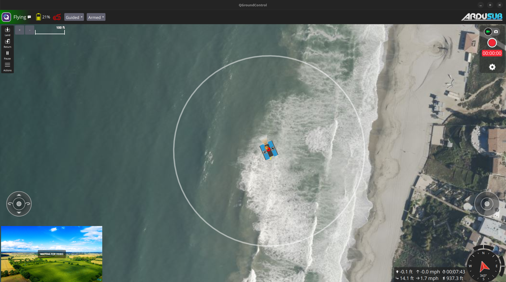
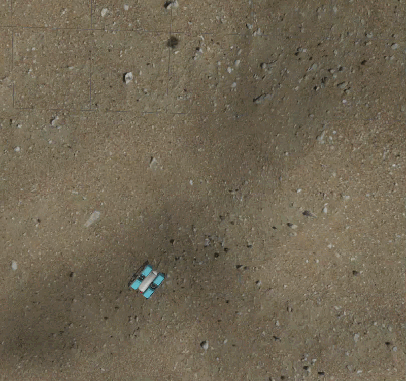
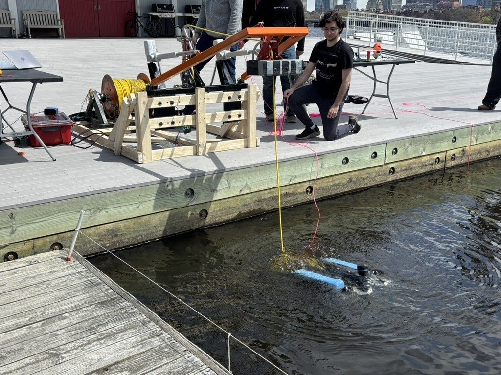
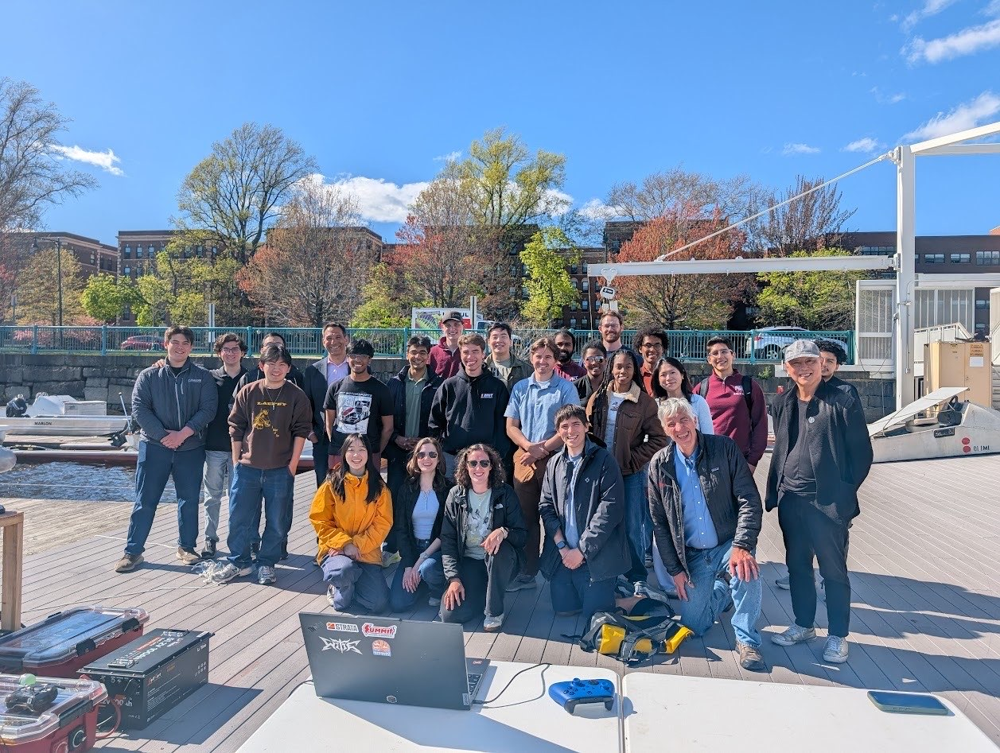

Vehicle Dynamics & Power Logistics
The system utilizes the BlueROV2 Heavy configuration, featuring an 8-thruster layout that provides full 6-Degree-of-Freedom (6-DoF) control. This setup is critical for executing complex inspection maneuvers, such as orbiting a monopile while keeping the camera locked on the target.
The ROV chassis was custom-machined from 6061 Aluminum. We initially pursued a custom frame geometry to optimize hydrodynamic performance; however, our subsequent simulations revealed no significant drag reduction compared to standard commercial frames. Additionally, the dense aluminum chassis, coupled with the heavy 360-degree scanning sonar and custom payload enclosures, drastically altered the vehicle's displacement. To achieve neutral buoyancy, we had to integrate significantly more syntactic foam than originally budgeted, carefully distributing it to maintain perfect pitch and roll trim.
For communication, data is transmitted over a single twisted pair inside a 300m neutrally buoyant tether using a Fathom-X interface. While the tether supports 400V, sending power down a 300m line requires bulky step-down converters. To optimize power economy and bay space, we opted for local battery power over tethered power.



Waterproofing & Deep-Sea Sealing
Achieving a 300-meter depth rating requires strict surface preparation. All aluminum flange mating surfaces were chemically stripped with acetone. Radial O-rings were lubricated with a highly specific, minimal film of marine silicone to avoid trapping micro-bubbles that cause high-pressure extrusion leaks.
Tether wires entering the dry bay were permanently potted into aluminum penetrators using marine-grade structural epoxy. Due to timeline constraints, we omitted a dedicated Kellems grip (strain relief bail). Consequently, the tether and epoxy potting bore the entire structural hanging weight of the ROV during deployment—a recognized poor engineering practice that survived testing only due to the extreme shear strength of the epoxy.
To verify seals prior to wet testing, the dry bay was pulled to a negative pressure using a topside vacuum pump for 10 minutes. While successful, this dry test only confirms seal integrity for roughly 1 atmosphere (5 meters), highlighting a critical gap between lab testing and 300-meter verification.



Autonomy & Simulation Stack
Because subsea hardware testing is high-risk, the entire flight stack was verified using Software-In-The-Loop (SITL) simulation before touching the water. We used Gazebo to simulate fluid dynamics and virtual sonar returns, and ArduSub to run the flight controller PID loops.
I wrote custom Python scripts utilizing PyMAVLink to act as the "Captain." The Commander script automatically arms the sub into GUIDED mode and runs a precise orbital inspection trajectory at 10Hz (strafing right at 1 m/s while rotating at 0.5 rad/s). The Scout script acts as a telemetry sniffer, eavesdropping on the MAVLink stream to verify our virtual 2D scanning sonar was successfully passing OBSTACLE_DISTANCE messages to the brain.


Field Deployment & System Integration
Transitioning from the lab to open water required robust physical deployment infrastructure. We managed the 300-meter tether using a large custom spool integrated with a slip-ring. This was a critical mechanical feature, allowing for uninterrupted high-voltage power and Fathom-X data transmission while the spool rotated during payout and retrieval.
During launch and recovery operations, the ROV was suspended entirely by the tether and lowered into the water using a heavy-duty A-frame hoist. While the ROV's internal subsea systems functioned as designed, testing the full shore-to-ship-to-sub architecture hit a logistical roadblock. Due to critical supplier delays with our autonomous surface vessel provider, we were unable to integrate the boat's propulsion and onboard computing suite.
Instead of halting the test, we adapted our operational protocols, bypassing the boat entirely and running the topside communications and power relay directly from the deployment pier.


Lessons Learned & V2 Roadmap
- Mechanical Strain Relief: V2 must incorporate a dedicated mechanical Kellems grip tied directly to the structural aluminum frame to isolate the data lines from tension loads.
- Closed-Loop Wall Braking: The next software milestone is feeding the sonar distance directly into the velocity controller, allowing the sub to automatically override pilot input and brake when approaching within 1.5 meters of a wall.
- High-Pressure Validation: Future iterations require testing empty enclosures in a physical hydrostatic pressure chamber at 35+ atmospheres before installing internal avionics.